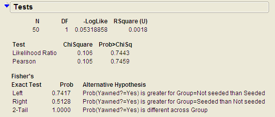
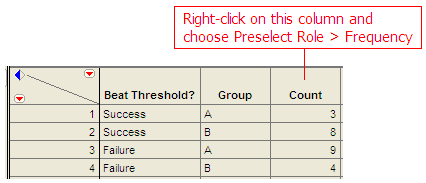
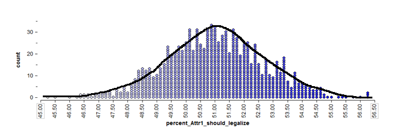
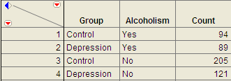

Chapter 6 Part 1¶
The hypothesis testing procedures presented in this section should be used when the observations from the two groups being compared are dependent. Whether or not the observations are dependent is determined by how the data are collected. To see this, consider the following example.
Research Question: On average, does body weight of college students increase over the Thanksgiving holiday break?
Questions*:
- What is the response variable of interest?
- What is the predictor variable of interest?

Questions:
- What can be said about the weight of Subject #1 as compared to Subject #7, for example, regardless of whether the data were collected before or after Thanksgiving?
Comment: For these data, the first pre-weight is related to the first post-weight (the two measurements were made on the same person). Thus, these two samples are dependent.
In other words, some of the variability in the responses might be due to differences between time periods (before vs. after), but much of the variability in the observations is likely due to differences between people! So, to control for this variability in weights from person to person (which will help us isolate the effect of Thanksgiving break), we will work with the DIFFERENCES on each subject, instead. This will remove the structure of dependence between the pre- and post-Thanksgiving groups and will control for the fact that some people, in general, tend to weigh more (or less) than others. In the end, this helps us to isolate the effect of Thanksgiving break (i.e., before vs. after).
* Calculating the Difference in JMP*
In the edit window, tell JMP to calculate the difference as follows:
Click Apply and then OK, and JMP returns the following (only the results for the first 10 subjects are shown below):

Questions:
- What does a positive difference of 3.9 indicate?
- What does a difference of -1.9 indicate?

Questions:
- What is the average difference of the 94 subjects? Interpret this value.
- If Thanksgiving break had no effect on body weight, what would you expect these differences to be, on average?* *
- If the research hypothesis is correct (body weights of college students increase over Thanksgiving break), what would you expect these differences to be, on average?
Comment*: Note that these differences are represented by a single column of data. So, instead of viewing this as a problem involving a categorical predictor and a numerical response, you could view this as a problem involving a single numerical variable – the differences! Therefore, the hypothesis testing procedure is exactly the same as the procedure for testing a single population mean we discussed in Chapter 5.
That is, the parameter of interest is the true population average of the differences which we will represent by μdifference.
- Our best estimate for this parameter is the sample mean of the observed differences. We’ll call this quantity.
- The sample standard deviation of the differences will be denoted by sdifference.
We can carry out the hypothesis test as follows to determine whether body weights of college students tend to increase over Thanksgiving break.
*Checking the Normality Assumption*:
Recall that for the t-test to be valid, at least one of the following conditions must be met:
- Either the sample size is sufficiently large (greater than 30 or so), or
- The distribution of the observed data is approximately normal (which would indicate that the population is normally distributed so that the Central Limit Theorem would apply even with a small sample size)
Question: Does the t-test appear to be a valid approach for testing this research question? Justify your reasoning.
*Step 1: Set up the null and alternative hypotheses*
Ho:
Ha:
*Step 2: Find the t-statistic and the p-value*
=
p-value =
* Step 3: Write a conclusion in the context of the problem*
* Interpreting the 95% confidence interval for the mean difference*
***¶

What effect would this have had on the analysis?
Ho:
Ha:
=
p-value =
Conclusion:
95% confidence interval for the mean difference:
***¶
*Example 6.2: Systolic Blood Pressure and Captopril* **The data in the file **Captopril.jmp give the systolic and diastolic blood pressures for 15 patients with moderate essential hypertension, immediately before and two hours after taking a drug, captopril. Our interest is in investigating the response to the drug treatment.
Research Question: Is there a change in systolic blood pressure after taking captopril?
Question: Are these samples dependent or independent? Explain.
*Check the assumptions behind the test *
- Is the number of pairs sufficiently large?
- If not, is it reasonable to assume the differences in systolic and diastolic blood pressures are normally distributed?
|  |  |
|---|---|
*Step 1: Set up the null and alternative hypotheses*
H0:
Ha:
*Step 2: Find the test statistic and the p-value *
|  | = |
|---|---|
Using JMP:
p-value: |
 |
|---|---|

*Step 3: Write a conclusion in the context of the problem*
Finally, construct a 95% confidence interval for the average difference in systolic blood pressure means.
Questions:
- Interpret this confidence interval.
- Does this interval agree with the results of the hypothesis test? Explain.
**Example 6.3: Systolic Blood Pressure and Captopril, Revisited **As we saw in Example 6.2, patients with moderate essential hypertension saw a decrease in systolic blood pressure. Note that we could also investigate the following question.
Research Question: Does the systolic blood pressure decrease by more than 10 mmHg?
*Check the assumptions behind the test *
- Is the number of pairs sufficiently large?
- If not, is it reasonable to assume the differences in systolic and diastolic blood pressures are normally distributed?
*Step 1: Set up the null and alternative hypotheses*
H0:
Ha:
*Step 2: Find the test statistic and the p-value *
| = | |
|---|---|
*Using JMP:
p-value: |
|
|---|---|


*Step 3: Write a conclusion in the context of the problem*
Recall the 95% confidence interval for the average difference in systolic blood pressure means:
Does this interval agree with the results of the hypothesis test? Explain.
***¶
*** Example 6.4: Diastolic Blood Pressure and Captopril* **Finally, we will use the Captopril data to investigate the following question.
Research Question: Does the diastolic blood pressure decrease by more than 5 mmHg?
Step 0: Check the assumptions behind the test *
- Is the number of pairs sufficiently large?
- If not, is it reasonable to assume the differences in systolic and diastolic blood pressures are normally distributed?
 |
 |
|---|---|
*Step 1: Set up the null and alternative hypotheses*
H0:
Ha:
*Step 2: Find the test statistic and the p-value *
| = | |
|---|---|
Using JMP:
p-value: |
 |
|---|---|

{kind=link}
{kind=link}
{kind=link}
{kind=link}
{kind=link}
{kind=link}
{kind=link}
{kind=link}
{kind=link}
*Step 3: Write a conclusion in the context of the problem*
Find the 95% confidence interval for the average difference in systolic blood pressure means:
Does this interval agree with the results of the hypothesis test? Explain.